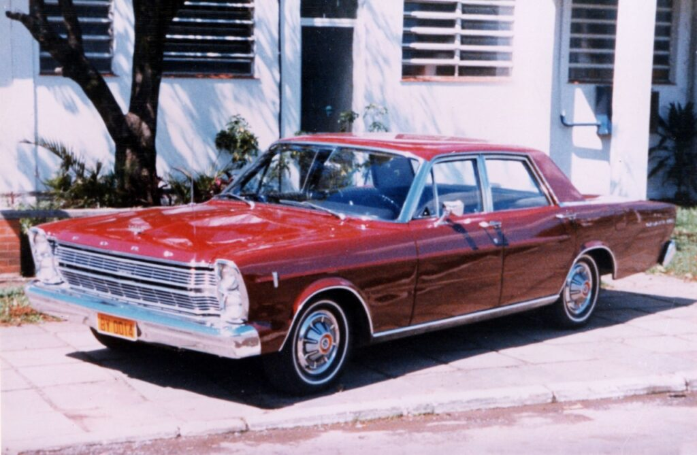
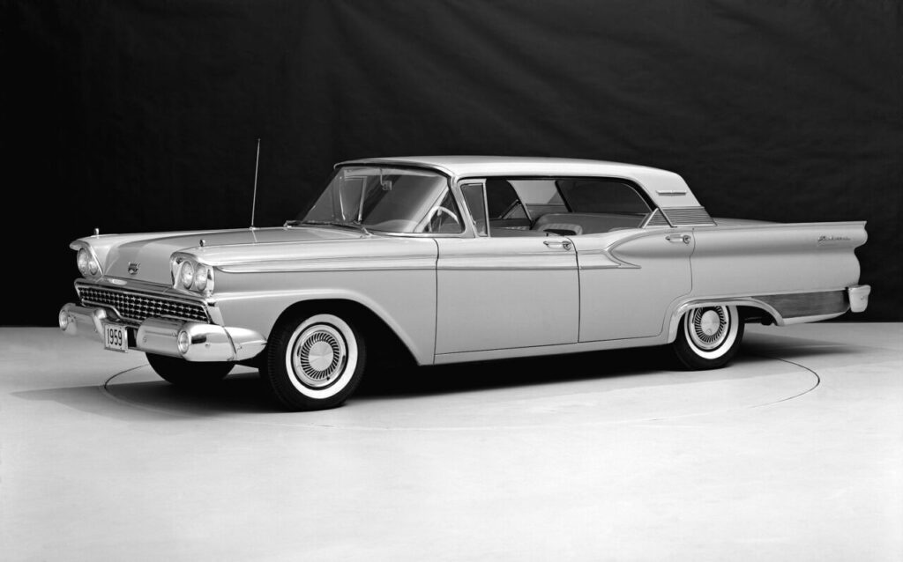
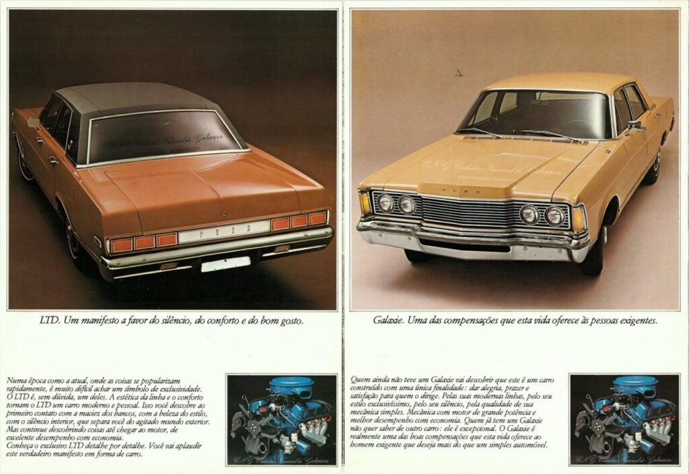

Sedã de grande porte americano, o Ford Galaxie foi, durante anos, sinônimo de carro de luxo no mercado automotivo brasileiro; saiba mais sobre o modelo a seguir
Lançado no Brasil em 1967, o Ford Galaxie é parte importante da história da indústria automobilística brasileira. Além de ter sido o primeiro carro de passeio da marca do oval feito por aqui, ficou marcado por anos como sinônimo de automóvel de luxo.
O sedã de grande porte ficou marcado também como um dos poucos automóveis de produção local que estava atualizado em relação ao seu equivalente no país de origem.
Na época, mesmo alguns carros de luxo brasileiros como o Simca Chambord e o Alfa Romeo 2000 já estavam fora de linha no exterior há alguns anos.

O maior carro já produzido no Brasil tem suas raízes nos Estados Unidos. Em 1959, o Galaxie surgiu como um sucessor do Fairlane 500, na posição de topo de linha da marca.
Além do sedã de duas e quatro portas, tinha como variações de carroceria um hardtop (sem coluna central) também de duas e quatro portas e também duas opções de conversível, uma delas com capota rígida de acionamento hidráulico.
Trazia a opção “econômica” de um motor 3.7 de seis cilindros e uma ampla gama de motores V8, que em sua configuração mais extrema no ano de estreia despejava 300 cv.
Como era comum na época na indústria automobilística americana, a cada ano os carros sofriam mudanças radicais de design.
Com o Galaxie não foi diferente. O ritmo dessas mudanças de visual só se reduziu com o modelo 1965, que inaugurou a carroceria que veríamos por aqui.
Com pequenas alterações, a carroceria durou até 1968, nas variações sedã de quatro portas, hardtop (duas e quatro portas) e conversível. O Galaxie teve mais uma geração por lá, que durou até 1974.
Foi quando a Ford decidiu abandonar o nome Galaxie para se concentrar no uso da sigla LTD para designar a versão de topo do seu modelo topo de linha de grande porte.
LTD que posteriormente virou LTD Crown Victoria e, por fim, apenas Crown Victoria. A trajetória dos sedãs de grande porte da Ford com motor V8, tração traseira e carroceria sobre chassi de vigas, se encerraria apenas em 2012, quando a última unidade do modelo foi produzida no Canadá.
A produção do Ford Galaxie 500 começou na fábrica do bairro do Ipiranga, na capital paulista, em fevereiro de 1967. Visualmente, o carro brasileiro era idêntico ao americano de 1966 e produzido apenas na carroceria sedã de quatro portas.
Logo se tornou popular como uma opção local aos Chevrolet Impala importados. Com mais de 5,30 metros de comprimento e 2,00 metros de largura, o carro impressionava pelo tamanho e requinte. Foram 9,237 unidades vendidas em seu ano de estreia. Marca que nunca mais foi atingida pelo modelo no Brasil.
O Galaxie do Brasil se diferenciava em um aspecto: o motor. Tinha como única opção o V8 “272”, um 4.5 da linha Y-Block de 166 cv. Usado no carro americano apenas em 1959, era empregado pela Ford no Brasil na linha de caminhões e na picape F-100. No ano de estreia, podia ser combinado apenas ao câmbio manual de três marchas.
Nos dois anos seguintes, o modelo recebeu apenas pequenas alterações estéticas, mas incorporou dois equipamentos que se tornariam bastante desejados no Galaxie nos anos seguintes: o ar-condicionado e o câmbio automático C4 de três marchas. O primeiro em um carro nacional. Em 1969, o modelo ganhou a versão LTD, que seria a origem do ainda mais luxuoso Ford Landau.
Com essa mudança na linha, o nome Galaxie passou a designar as configurações mais acessíveis do sedã de topo da Ford no mercado automotivo brasileiro.
Além do Galaxie 500, no início dos anos 1970 a linha teve uma versão simplificada, chamada apenas de Galaxie. Tinha menos equipamentos, calotas simples e acabamento simplificados), para disputar o mercado com os menores Chevrolet Opala e Dodge Dart.
A primeira grande mudança visual veio em 1973. Mantendo a mesma carroceria, ganhou dianteira e traseira redesenhados, que deram ao modelo um visual exclusivo para o Brasil. Na época, o modelo já era equipado com o motor V8 “292”, um 4.8 V8 Y-Block de 190 cv que era padrão na linha Galaxie desde 1970.
Uma nova reestilização viria em 1976, com nova traseira e uma dianteira com faróis horizontais. Outra novidade era o motor V8 “302”. Um 4.9 V8 de 199 cv da linha Windsor, que era usado também no Ford Maverick.

Em 1979, a Ford optou por descontinuar o Galaxie 500. Na época, o sedã já estava bastante defasado e enfrentava a concorrência de modelos menores e menos gastões, como o Chevrolet Comodoro e o Alfa Romeo 2300.
O LTD durou até 1981, enquanto o Landau teve a produção encerrada em 1983. No total, foram produzidos no Brasil 77.850 unidades da linha Galaxie.
Como sucessor, veio em seu lugar o famoso Ford Del Rey. Um modelo que era reconhecido pelo seu luxo e pelo pacote de equipamentos de série na sua versão de topo Ouro. Mas era derivado do Corcel, inclusive contando com o mesmo motor 1.6 de quatro cilindros.